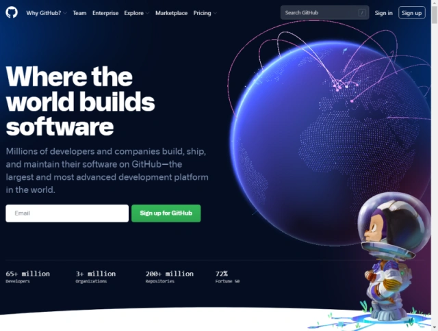
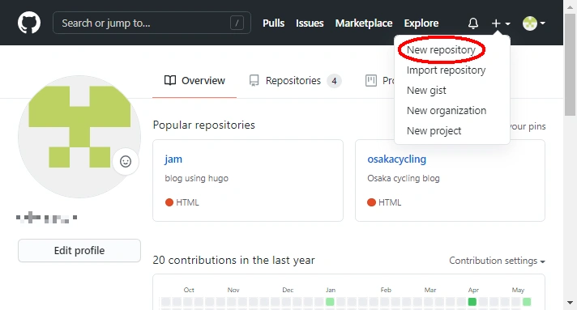
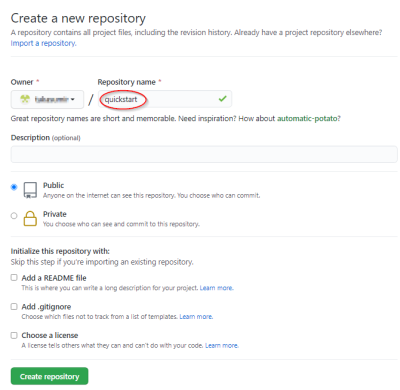
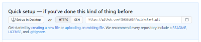
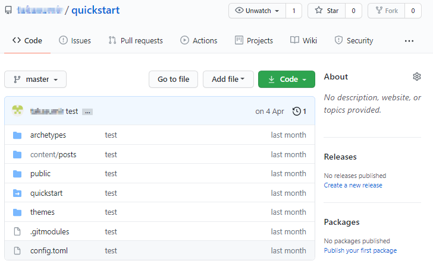

Hugo+NetlifyでJamstackブログの作り方 (2) GitHubへアップロード
Hugo+NetlifyでJamstackブログの作り方 (1)事前準備でHugoでドラフト記事を作成し、ローカルサーバーで表示してみました。次はGitHubへのアップロードです。
GitHubのアカウント登録
GitHubのアカウントを持っていない場合は、GitHubへアクセスして右上のボタンからSign upします。

レポジトリの作成
アカウントを登録したら右上の＋マークからNew Repositoryで新しいレポジトリを作成します。

quickstartという名前を入れてレポジトリを作成します。

レポジトリが作成できました。

レポジトリのURL https://github.com/ユーザー名/quickstart.git は後で使うのでコピーしておきましょう。
GitHubへアップロード
Git bashを起動し、quickstartフォルダで下記コマンドを実行しローカルレポジトリにファイルを追加(add)します。
$ git add .
ファイルを追加したら次はコミット(commit)します。
$ git commit -m 'my first commit'
ローカルレポジトリからファイルをプッシュ(push)する先のリモートレポジトリを設定します。リモートレポジトリは先ほどGitHubで作成したURLを入れます。
$ git remote add origin https://github.com/ユーザー名/quickstart.git
リモートレポジトリが正しく追加されたか確認します。
$ git remote -v
最後にリモートレポジトリにローカルファイルをプッシュ(push)します。origin、masterなどbranchの概念が出てきますがここではとりあえずmasterブランチにアップロードします。別のbranch名を作成してNetlifyでbranchを指定することもできます。
$ git push origin master
ファイルがアップロードされました。

まとめ
Hugoで記事を作成した後のGitHubへのアップロードについて説明しました。gitのコマンドは慣れないと難しく感じますが、ローカルレポジトリを変更したら add -> commit -> push の流れを掴んでおけば良いでしょう。
次はようやくGitHubへアップロードしたファイルをもとにNetlifyでブログを公開する方法を説明します。